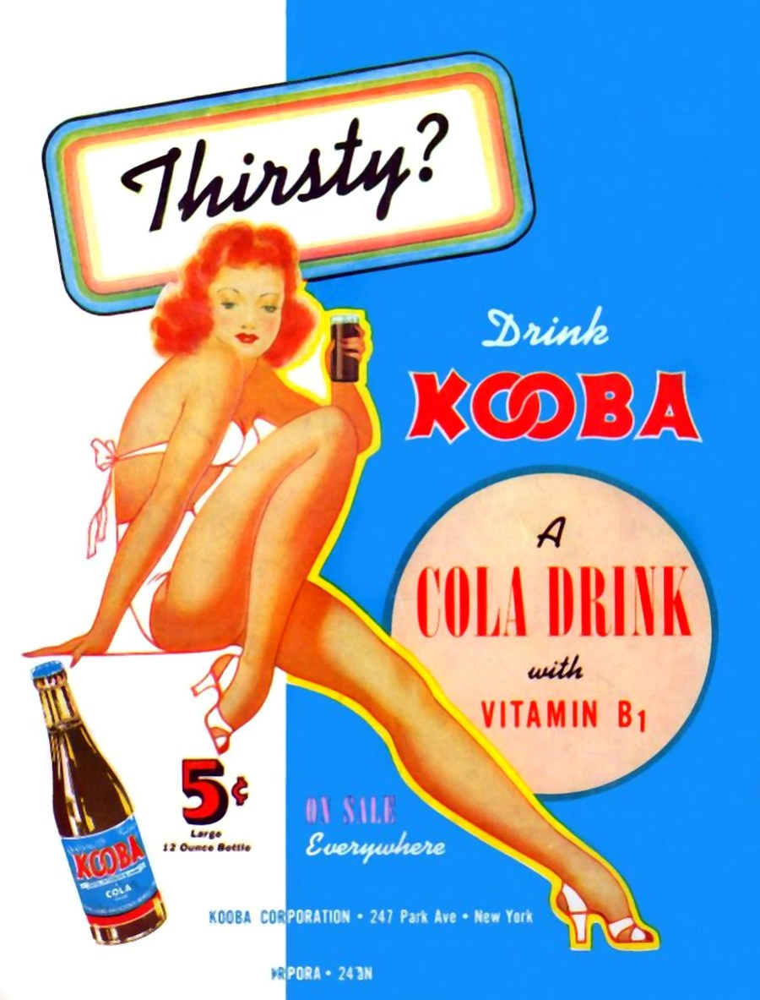
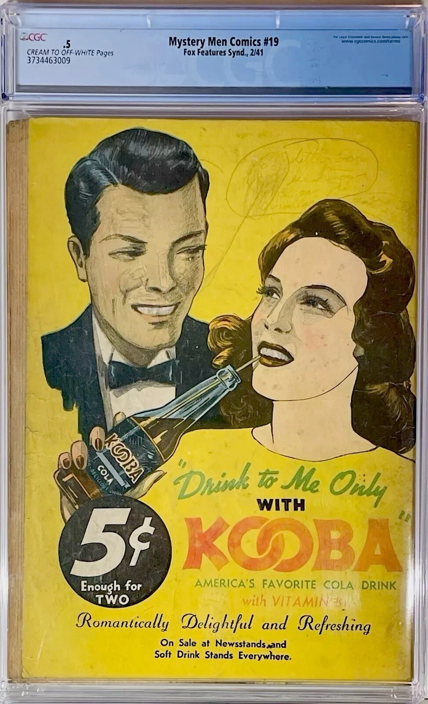
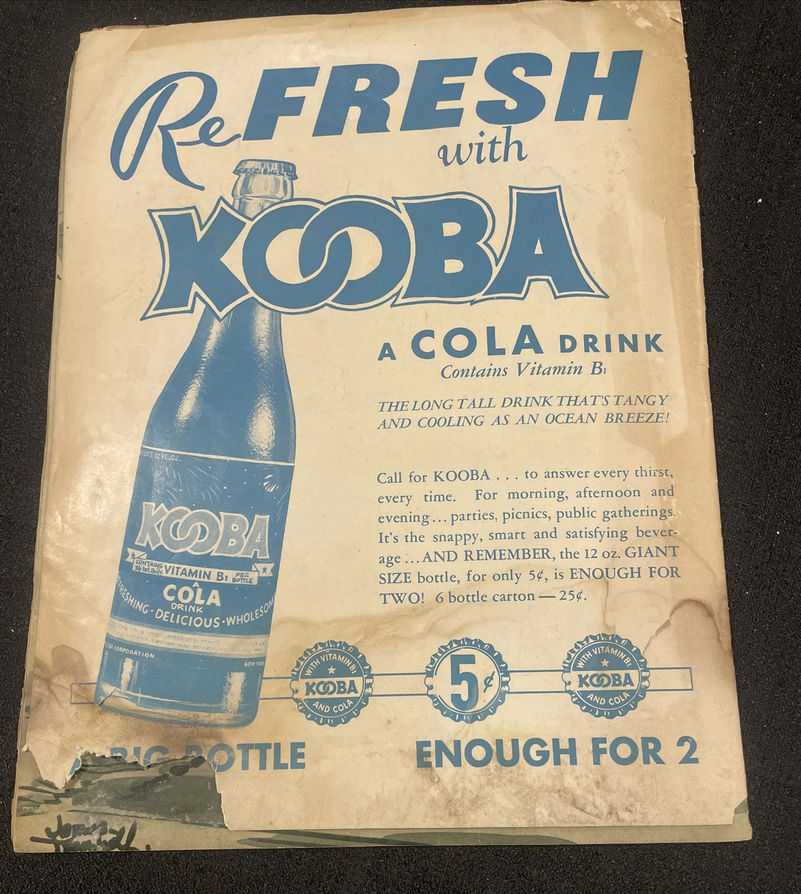

The soda that (mostly) never was
In the fall of 1940, readers of Fox Features Syndicate comics — Blue Beetle, Mystery Men Comics, Fantastic Comics — started seeing ads for a brand-new soft drink: Kooba Cola, “The World’s Newest and Best-Tasting Soft Drink,” five cents a bottle, with Vitamin B-1. The ads looked like the launch of the next Coca-Cola. Most historians of the comics assumed the soda itself was as fictional as the superheroes carrying its ads.
It wasn’t. The Kooba trademark was filed with the U.S. Patent Office on August 20, 1940 (registered January 21, 1941, Registration No. 384,537), and at least two real bottling operations put Kooba in bottles:
Honolulu. On December 16, 1940, Malolo Soda Works launched Kooba in Hawaii — a 12-ounce bottle for five cents, with a public slogan contest that drew more than 200 entries. Kooba was advertised in Honolulu newspapers and sold across Oahu.
Miami. The Kooba Bottling Company of Miami, Inc. was chartered on November 18, 1940 — with comic-book publisher Victor S. Fox himself listed as a director. The plant bottled Kooba through 1941; liquidation ads ran that December, and the last traces fade in the spring of 1942. The company was dissolved in 1945.
The soda vanished. The ads — printed by the millions on comic-book back covers — survived. The Kooba Cola History Museum documents what remains: the advertising, the bottles and caps that surface, the corporate paper trail, and the people who made it real. Our watch desk scans the marketplaces daily, and every genuine Kooba artifact that surfaces gets catalogued here and on our social channels.
From the gallery
Browse the full gallery → — twelve catalogued pieces: the ads, the coupons, the covers, and the cap. One is featured daily on the museum’s social channels.



From the watch desk
Recent finds, shared by the museum as they surface. (#ad — links are eBay Ambassador links; the museum may earn a commission, at no cost to you.)
- Fresh Magazine, Vol. 1 No. 1 (November 1940) — Kooba ad on the back cover. Listed at $50 or Best Offer. See it on eBay
- Mystery Men Comics #19 (February 1941), CGC 0.5 — the “Drink to Me Only” Kooba back cover, preserved in the slab. Listed at $499 or Best Offer. See it on eBay
Visit the museum
New finds are posted daily on the museum’s social channels: